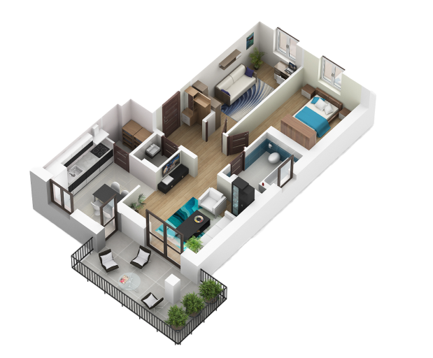

<section class="interactive">
	<div class="container-xl">
		<div class="row">
			<h3 class="heading-sec text-center">Для чего вам нужен дизайн <span class="orange-underline">проект
					?!</span></h3>
		</div>
		<div class="row interactive_content">
			<div class="interactive_house_wrapper">
				
				<div id="plusBedroom" hint-class="bedroom-hint" class="interactive_plus"></div>
				<div id="plusMeeting" hint-class="meeting-hint" class="interactive_plus"></div>
				<div id="plusKitchen" hint-class="kitchen-hint" class="interactive_plus"></div>
				<div id="plusKidroom" hint-class="kidroom-hint" class="interactive_plus"></div>
				<div id="plusBalcony" hint-class="balcony-hint" class="interactive_plus"></div>
				<div id="plusBathroom" hint-class="bathroom-hint" class="interactive_plus"></div>
				<div class="interactive__hint tap-hint">
					
					<br>
					<span>
						Наведите на элемент <br>
						что бы узнать <br>
						подробнее
					</span>
				</div>
				
				<!-- Bathroom hint-->
				<div id="bathroomHint" class="interactive__hint bathroom-hint hide">
					Ванная может гармонировать с другими комнатами или быть обособленной.
					Оптимальный проект поможет скрыть недостатки.
					Разрабатывая концепт важно учесть детали от подсветки потолка до элементов декора
				</div>
				
				<!-- Bedroom hint-->
				<div id="bedroomHint" class="interactive__hint bedroom-hint hide">
					Современная спальня — это непросто место, где человек спит, речь идет о том месте, где можно
					расслабиться и отдохнуть после напряженного трудового дня, причем не только телом, но и душой. Как
					видно, значимое место в доме, поэтому оформлению его интерьера необходимо уделить самое пристальное
					внимание
				</div>
				
				<!-- Kidroom hint-->
				<div id="kidroomHint" class="interactive__hint kidroom-hint hide">
					Дизайн-проект в детской необходим для экономии средств связанных с взрослением ребенка. Уже на этапе
					проектирования запланировать перестоновки грядущие через несколько лет для комфортного и уютного
					проживания ребенка
				</div>
				
				<!-- Meeting hint-->
				<div id="meetingHint" class="interactive__hint meeting-hint hide">
					Как правило, выбор для расположения гостиной попадает на самую большую по метражу комнату в
					квартире, так как здесь должны комфортно чувствовать себя все члены семьи, собравшись вместе. В
					идеале, гостиная должна быть связующей пространственной зоной со всеми остальными помещениями в
					доме.
					Варианты концепций дизайна интерьера гостиной могут быть самыми разнообразными,так как это помещение
					в квартире, пожалуй, единственное, не ограниченное его функциональными требованиями.

				</div>
				
				<!-- Balcony hint-->
				<div id="balconyHint" class="interactive__hint balcony-hint hide">
					Дизайн-проект лоджии нужен для того чтобы Отвлечься от привычных стеллажей и шкафов в лоджии и
					превратить её в маленький мир отдыха и медитации.
				</div>
				
				<!-- Kitchen hint-->
				<div id="kitchenHint" class="interactive__hint kitchen-hint hide">
					<b>Дизайн-проект</b> позволяет спланировать будущую <b>кухню</b> до мелочей, продумать все детали,
					составить смету
					и план работы, а также визуализировать световые и дизайнерские решения для своей <b>кухни</b>. При
					этом
					работа идет быстрее и слаженнее по заранее намеченному плану, что приближает хозяев к новой
					<b>кухне</b>
					своей мечты.
				</div>
				
			</div>
		</div>
	</div>
</section>